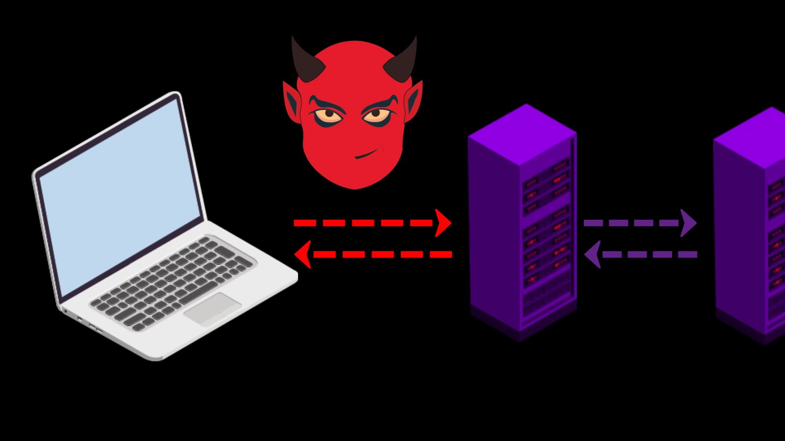
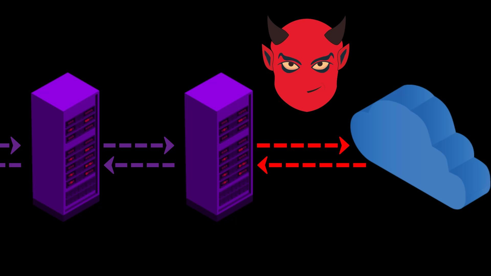
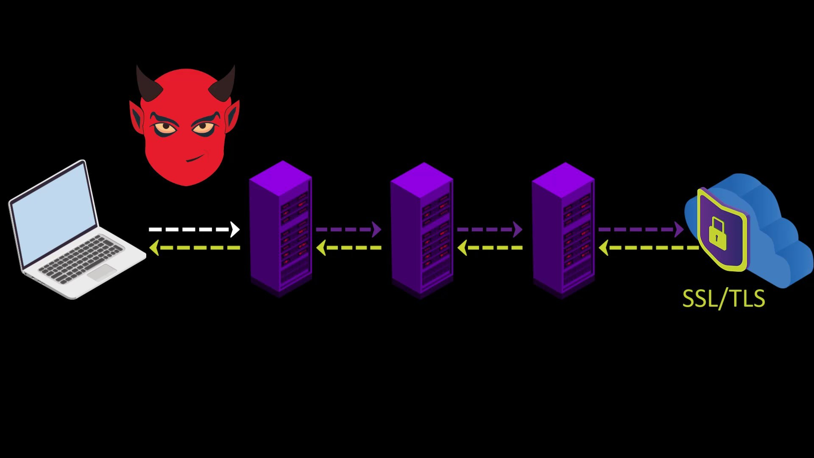
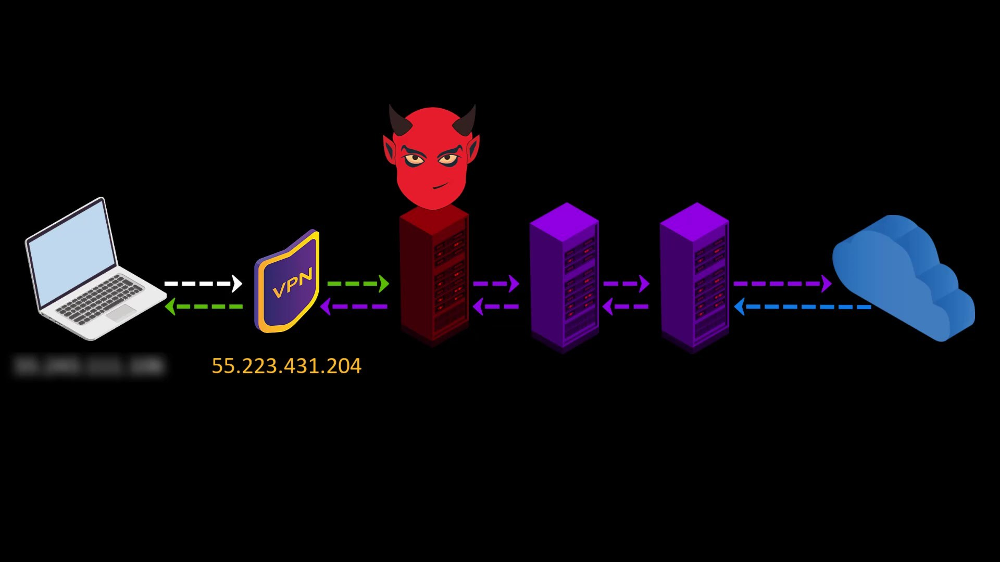
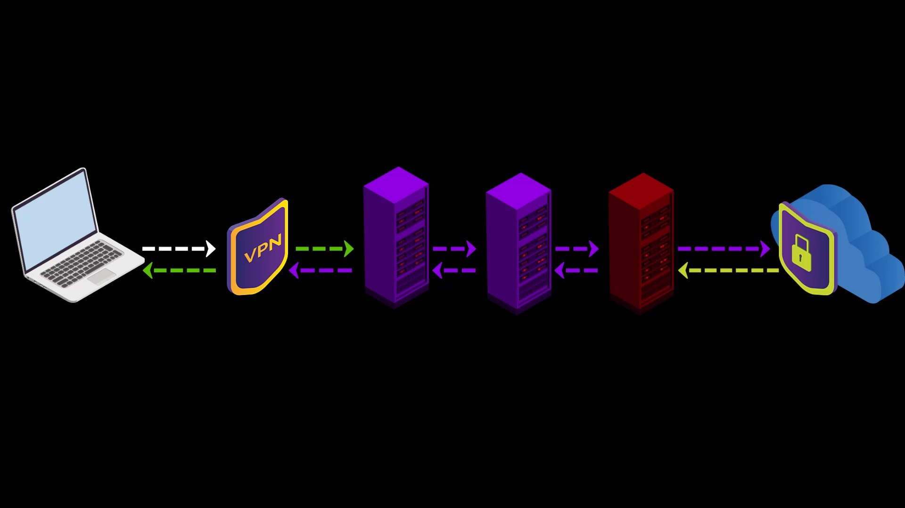
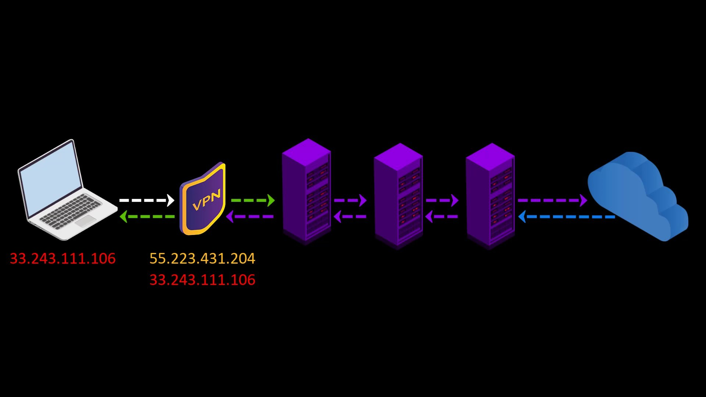
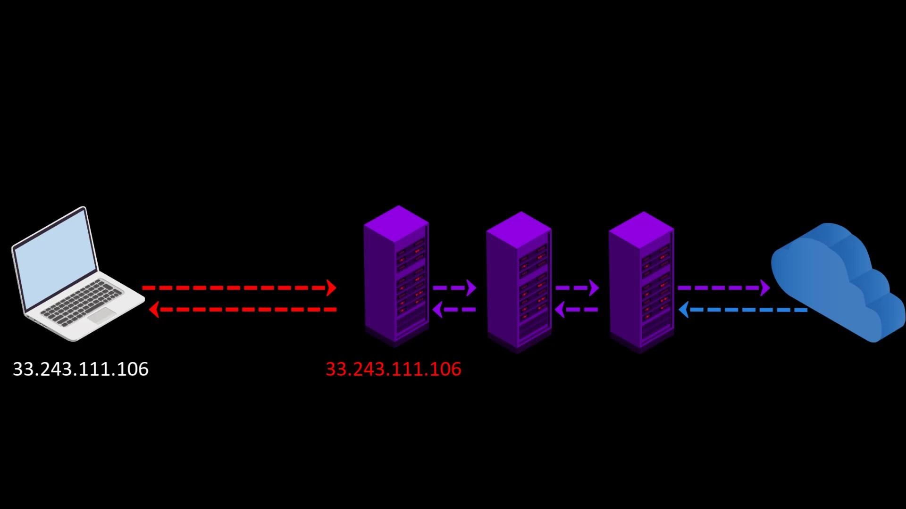
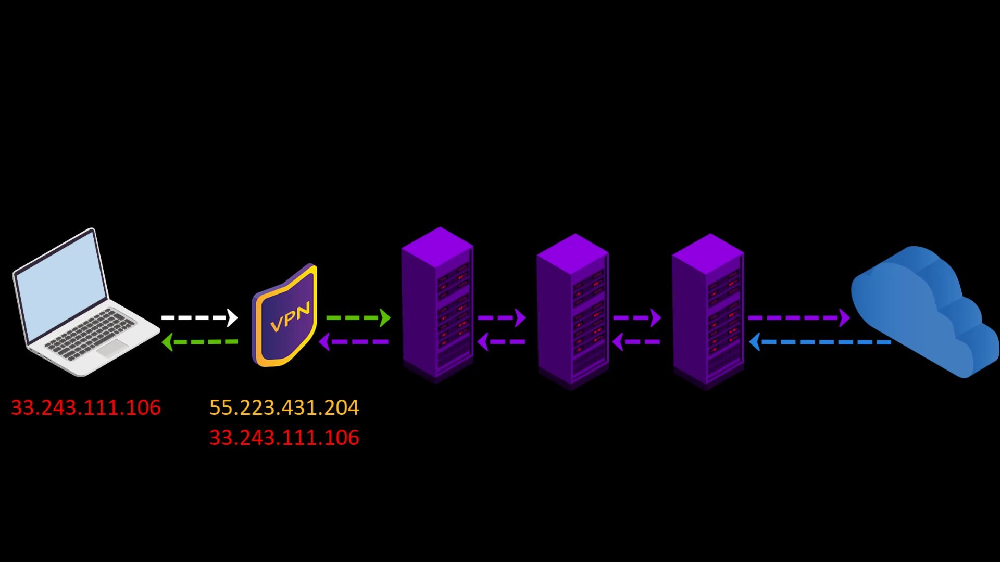
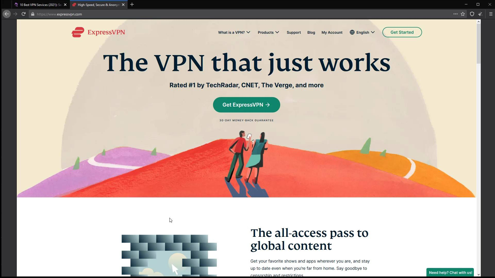

TOR over VPN
When you want to access the internet through the Tor network, the traffic between you and the entry node assigned to you can be monitored by malicious observers.

If the website you are visiting to doesn't have SSL or TLS encryption layer, ie the encrypted connection that appears as "https", the traffic between the website and you won't be encrypted, so it can be monitored by observers.
If the website you communicate with has an valid SSL or TLS certificate, the observer can't know about the content, even if it monitors the connection between them, observer can only see that you have access to the Tor network. The SSL and TLS certificates mentioned here both encrypt the traffic between you and the website.
Some websites use SSL while others use TLS certificate. For the rest of the course I will be referring to both certificates by simply saying SSL.When you connect to the Tor network over VPN, your internet access appears as like that.

Your Computer -> VPN -> Tor -> Internet
Advantages of connecting to the Tor network over VPN;
- Your internet service provider or any observer on your network can't see that you are connecting to the Tor network. It only sees that you have established a VPN connection. Since VPN use is much more common than the Tor network, this creates relatively little doubt about your internet traffic.
- Because the communication between you and the Entry/Guard node will be encrypted by the VPN, observers or malicious Entry/Guard nodes on the network cannot breach your privacy.
- Since the Tor entry node will see the ip address of the VPN service you are using instead of your real ip address, you will hide your real ip address even if the entry node is malicious. However, for real anonymity at this point, your VPN service shouldn't be keep logs. Otherwise, your anonymity may be violated by associating your real ip address with the ip address of the VPN service.



In addition to these advantageous features, there are also disadvantages we experience when connecting to the Tor network over VPN ;
- Your VPN service knows your real IP address. If it keeps logs or is an unreliable service for any reason, it can reveal your true identity. At this point, it is very important to choose reliable service.
- If the web address you are visiting to doesn't contain SSL protection, malicious exit nodes may read by the website response to you. Although it isn't associated with your real ip address, there is a possibility that your data, ie your privacy, may be compromised by the exit node.
Because VPN only encrypts the data sent from you to the entry node, the data sent by the website cannot be encrypted by the VPN while reaching the exit node.
In such a case, if the exit node is malicious, it may violate your privacy by reading the response sent from the website.
However, this applies to any site that doesn't have an SSL certificate, i.e. doesn't offer a secure connection that appears as https. In other words, it isn't a disadvantage of using VPN. I have just added it to the disadvantage list to indicate that visiting non-HTTPS addresses with only VPN use can also compromise your privacy. The only solution to this situation is to visit websites that use an SSL certificate.

If the website you want to visit doesn't have SSL encryption, remember that the content you write and read can be easily monitored by those who listen to your network. - Another disadvantage is that in addition to the slowness of the Tor network, using a VPN will slow the internet speed more. However, considering the security it brings, this is not a big loss.

Things to consider when choosing a VPN;
The priorities you should be aware of when using the Tor network over VPN; It is to prefer VPN services that provide uninterrupted service, never keep logs and can make payments anonymously. If you ask why these are important;
- If your VPN connection drops when you connect to the tor network over VPN, observers on your network can learn that you are connected to the tor network. In addition, the entry node, which is the first node, can learn your real ip address during the connection drops.
- If the VPN service keep logs, all the security and privacy measures you take will be in vain, as the origin point of all the activities you do will be known by your VPN service. Logging means that your entire internet record is associated with your identity. In such a case, it doesn't make much sense to be using the Tor network.
- When paying for a VPN service, it is very important to pay in cryptocurrency to protect your holistic anonymity. Thus, when the ip address of the VPN service standing in front of your real ip address is searched, it cannot be directly associated with your real identity. In the course of the training, we will also be talking about how cryptocurrencies give us anonymity.



At this point, you have to decide for yourself which is the most ideal VPN service. It can be difficult to determine which VPN service is trusted. So you may want to check out this VPN comparison chart by That One Privacy Site, which analyzes almost 200 VPN providers based on their jurisdictions and policies.
https://www.safetydetectives.com/best-vpns/

For example, in the period I reviewed this list, express VPN was chosen as the most ideal VPN service.
In addition to being on the list, according to my personal experience, I can recommend you to use "Express VPN". My recommendation reason; It has been proven by independent organizations that it doesn't keep logs and prevents the leak of your real IP address by disconnecting the internet as soon as the VPN connection is lost. You can use the crypto money "bitcoin" for payment, and you can also get a refund if you are not satisfied by trying the service for a month.

Although this service is ideal in my opinion, you can of course take a look at alternative services and make your own decision. In addition, what I explain here isn't an advertisement for the service. It is a service that I have specified to share my personal opinion for suggestion purposes. I have created a special discount link for this course so that only those who want to use it can use it at a discount. I have added the link to the resources for this lecture. You can try it if you want to use it.
After choosing the right VPN service, all you have to do to use Tor over VPN is to start the VPN service of your choice before connecting to the Tor network. To connect to the VPN service, you need to download and install the application of your preferred service on your system. After the installation process, you can make the VPN connection very easily.